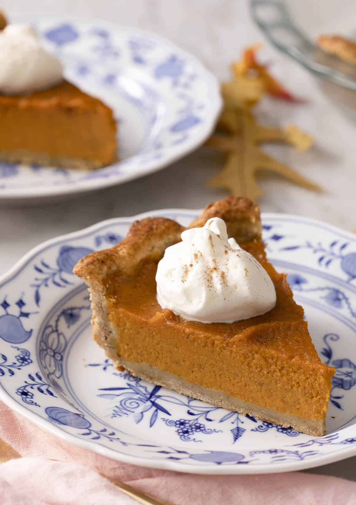

Home
Sweet Potato Pie

Description:
This classic Sweet Potato Pie is a Southern favorite, perfect for Thanksgiving or any holiday.
Made with simple ingredients and warm spices, the filling is creamy, dense, and full of flavor.
Sweet potatoes give the pie a naturally sweeter and lighter filling compared to pumpkin pie,
while the roasted sweet potatoes bring out a caramel-like flavor. The buttery, flaky crust complements the rich,
silky filling for a delicious dessert.
Ingredients:
- 4 Sweet potato
- 250 ml Milk
- 2 Eggs
- 150g Sugar
- 1 1/2 tsp Vanilla
- Ready-made pie crust
- Seasoning:
- 1 tsp cinnamon
- 1/4 tsp nutmeg
- 1 tsp ginger powder
Steps:
- Pierce the sweet potatoes with a knife and place them on a foil-lined baking sheet.
Bake for 1 hour or until soft and the skin wrinkles. Let cool for at least 30 minutes before peeling.
- Mash the sweet potatoes in a large bowl or puree them in a food processor for a smoother filling
- n a large mixing bowl, combine the roasted sweet potato, sugar, and milk.
- Add and whisk the eggs, vanilla, ginger, cinnamon, and nutmeg until well combined.
- Pour the filling into the crust and bake for 15 minutes. Reduce the temperature and bake for another 40 minutes,
or until the center barely wobbles. Let cool completely on a wire rack. Serve at room temperature or refrigerate
for up to 24 hours.